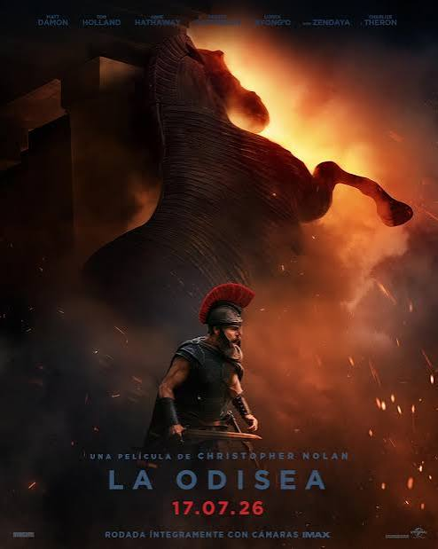
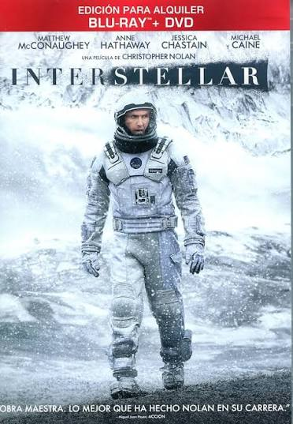
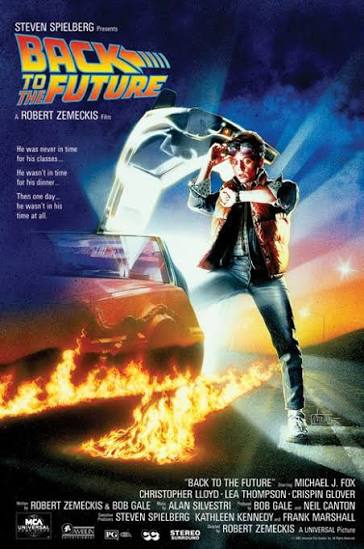
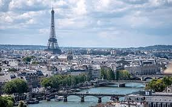
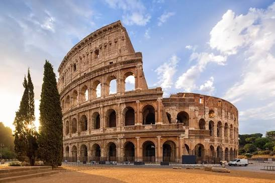
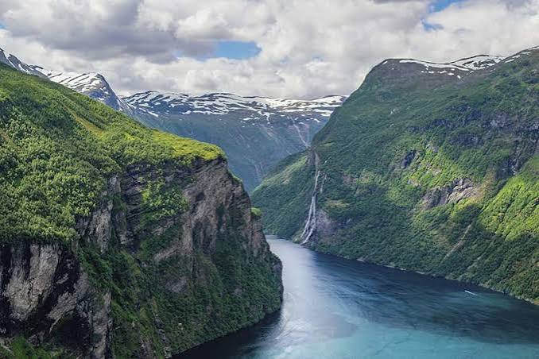

Mi WEB Personal
Mis aficiones:
Me gusta jugar videojuegos en mi tiempo libre, para divertirme y distraerme de las tareas del dia a dia.
- Jugar Videojuegos
- Leer
- Programar
- Viajar
Mis estilos de música:
Los estilos de música que más suelo escuchar són:
- Pop
- Rock
Mis películas favoritas:
Esas son algunas de las películas que más me impresionaron y gustaron cuando las vi.
Las películas que más me suelen gustar son las de Aventura y Ciencia Ficción principalmente.
- La Odisea: una pelicula bastante reciente y que me llamó mucho la atención cuando la vi, explica una historia básada en un mito griego y me llamó mucho la atención lo bien hecha que está y como te mete en la historia.
- Interstellar: una película más antigua, pero que no por eso es peor, me la recomendo mi padre, que es muy fanatico del cine y me encantó, muy buena película de ciencia ficción y siempre me gusta recordarla.
- Regreso al futuro: una película bastante vieja, con varias continuaciones y que me gusto mucho desde el momento en que la vi, una pelicula muy buena de ciencia ficción.



Mis libros favoritos:
Me gusta mucho leer libros relacionados con la Aventura, el Misterio o la Fantasia. Cuando un libro me gusta mucho, no puedo parar de leerlo, no soy la persona que más libros lee pero me apasionan algunos libros.
- Harry Potter: Fué uno de los primeros libros que leí y me gustó mucho, no recuerdo exactamente el libro pero sí que me encanto, y ahi me empezó a gustar la fantasía.
- Herencia en Juego: Un libro que leí recientemente y me gusto mucho, junta el misterio con la aventura y consigue que me quede leyendolo durante mucho tiempo
Mejores viajes:
Algunos de los viajes que mas he disfrutado, he viajado a bastantes lugares a lo largo de mi vida, pero estos son los que más buenos recuerdos me traen y disfruté mucho:
- París (2017)
- Fué un regalo de mi comunión y lo recuerdo con mucho cariño, visitar la ciudad de París y viajar hasta DisneyLand, sin duda uno de los mejores viajes que he hecho.

- Roma (2024)
- Viaje también muy bueno, sobretodo por la comida Italiana, muy buen recuerdo de esto último.

- Noruega (2026)
- Es el viaje más reciente que he realizado y tengo muy buen recuerdo, fué un crucero por noruega y me lo pasé en grande, junto con que era una nueva experiencia que nunca habia probado y me encanto.
